The reaction of carboxylic acids are classified as follows:
Acidit
Reactions with metals and alkalies
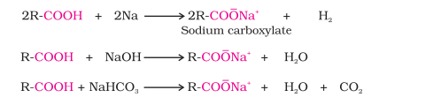
Carboxylic acids dissociate in water to give resonance stabilised carboxylate anions and hydronium ion
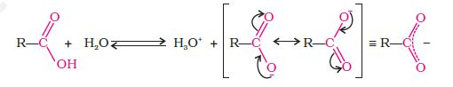
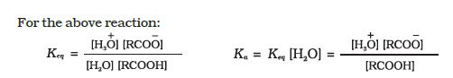
where Keq, is equilibrium constant and Ka is the acid dissociation constant.
For convenience, the strength of an acid is generally indicated by its pKa value rather than its Ka value.
pKa = – log Ka
The pKa of hydrochloric acid is –7.0, where as pKa of trifluoroacetic acid (the strongest carboxylic acid), benzoic acid and acetic acid are 0.23, 4.19 and 4.76, respectively. Smaller the pKa, the stronger the acid ( the better it is as a proton donor). Strong acids have pKa values < 1, the acids with pKa values between 1 and 5 are considered to be moderately strong acids, weak acids have pKa values between 5 and 15, and extremely weak acids have pKa values >15. Carboxylic acids are weaker than mineral acids, but they are stronger acids than alcohols and many simple phenols (pKa is ~16 for ethanol and 10 for phenol). In fact, carboxylic acids are amongst the most acidic organic compounds you have studied so far. You already know why phenols are more acidic than alcohols. The higher acidity of carboxylic acids as compared to phenols can be understood similarly. The conjugate base of carboxylic acid, a carboxylate ion, is stabilised by two equivalent resonance structures in which the negative charge is at the more electronegative oxygen atom. The conjugate base of phenol, a phenoxide ion, has non-equivalent resonance structures in which the negative charge is at the less electronegative carbon atom. Therefore, resonance in phenoxide ion is not as important as it is in carboxylate ion. Further, the negative charge is delocalised over two electronegative oxygen atoms in carboxylate ion whereas it is less effectively delocalised over one oxygen atom and less electronegative carbon atoms in phenoxide ion (Unit 11, Class XII). Thus, the carboxylate ion is more stabilised than phenoxide ion, so carboxylic acids are more acidic than phenols. Effect of substituents on the acidity of carboxylic acids: Substituents may affect the stability of the conjugate base and thus, also affect the acidity of the carboxylic acids. Electron withdrawing groups increase the acidity of carboxylic acids by stabilising the conjugate base through delocalisation of the negative charge by inductive and/or resonance effects. Conversely, electron donating groups decrease the acidity by destabilising the conjugate base.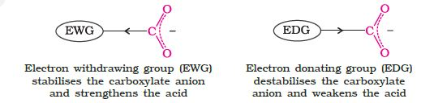
The effect of the following groups in increasing acidity order is
Ph < I < Br < Cl < F < CN < NO2 < CF3
Thus, the following acids are arranged in order of increasing acidity (based on pKa values):
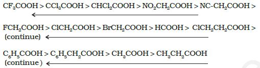
Direct attachment of groups such as phenyl or vinyl to the carboxylic acid, increases the acidity of corresponding carboxylic acid, contrary to the decrease expected due to resonance effect shown below:
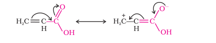
This is because of greater electronegativity of sp2 hybridised carbon to which carboxyl carbon is attached. The presence of electron withdrawing group on the phenyl of aromatic carboxylic acid increases their acidity while electron donating groups decrease their acidity.
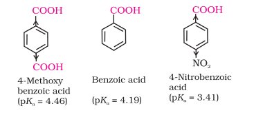
1. Formation of anhydride
Carboxylic acids on heating with mineral acids such as H2SO4 or with P2O5 give corresponding anhydride.
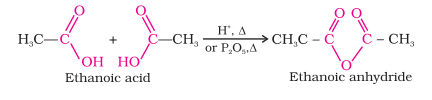
2. Esterification
Carboxylic acids are esterified with alcohols or phenols in the presence of a mineral acid such as concentrated H2SO4 or HCl gas as a catalyst.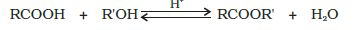
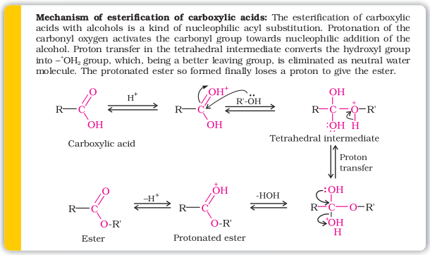
3. Reactions with PCl5, PCl3 and SOCl2
The hydroxyl group of carboxylic acids, behaves like that of alcohols and is easily replaced by chlorine atom on treating with PCl5, PCl3 or SOCl2. Thionyl chloride (SOCl2) is preferred because the other two products are gaseous and escape the reaction mixture making the purification of the products easier.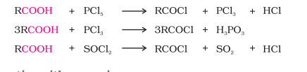
4. Reaction with ammonia
Carboxylic acids react with ammonia to give ammonium salt which on further heating at high temperature give amides. For example: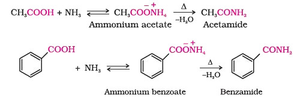
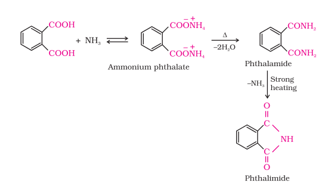
1. Reduction
Carboxylic acids are reduced to primary alcohols by lithium aluminium hydride or better with diborane. Diborane does not easily reduce functional groups such as ester, nitro, halo, etc. Sodium borohydride does not reduce the carboxyl group.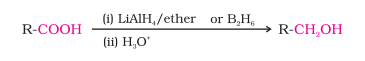
2. Decarboxylation
Carboxylic acids lose carbon dioxide to form hydrocarbons when their sodium salts are heated with sodalime (NaOH and CaO in the ratio of 3 : 1). The reaction is known as decarboxylation.
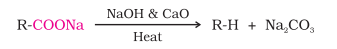
Alkali metal salts of carboxylic acids also undergo decarboxylation on electrolysis of their aqueous solutions and form hydrocarbons having twice the number of carbon atoms present in the alkyl group of the acid. The reaction is known as Kolbe electrolysis (Unit 13, Class XI).
1. Halogenation
Carboxylic acids having an α-hydrogen are halogenated at the α -position on treatment with chlorine or bromine in the presence of small amount of red phosphorus to give α-halocarboxylic acids. The reaction is known as Hell-Volhard-Zelinsky reaction.
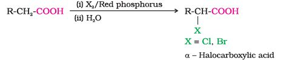
2. Ring substitution
Aromatic carboxylic acids undergo electrophilic substitution reactions in which the carboxyl group acts as a deactivating and meta-directing group. They however, do not undergo Friedel-Crafts reaction (because the carboxyl group is deactivating and the catalyst aluminium chloride (Lewis acid) gets bonded to the carboxyl group).